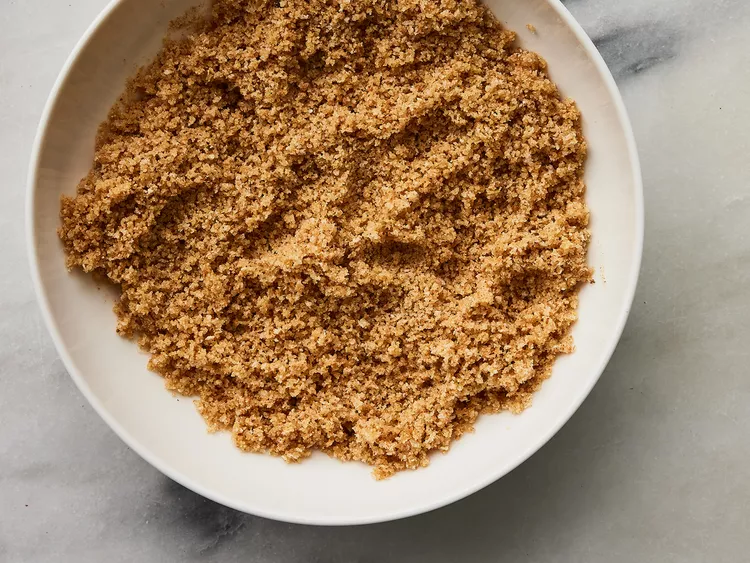
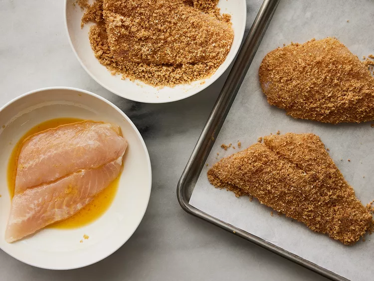
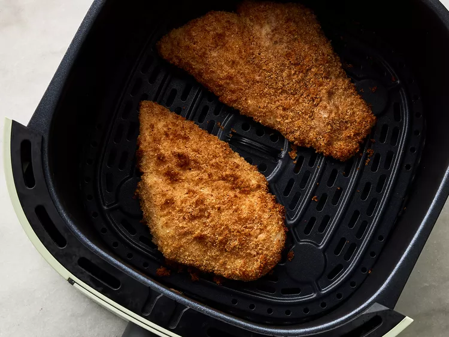

Description
This air fryer fish recipe is delicious. Crumbed fish is one of my favorite fried items, and this air-fried version of the recipe gives me great flavor without the fat.
Ingredients
- 1 cup dry bread crumbs
- ¼ cup vegetable oil
- 4 flounder fillets
- 1 egg, beaten
- 1 lemon, sliced
Steps
- Step 1
- Step 2
- Step 3
- Step 4
- Step 5
Preheat an air fryer to 350 degrees F (180 degrees C).

Place bread crumbs and oil into a shallow bowl; stir until mixture becomes loose and crumbly.

Dip fish fillets into egg; shake off any excess. Dip fillets into bread crumb mixture; coat evenly and fully.

Lay coated fillets gently in the air fryer basket; cook in the preheated air fryer until fish flakes easily with a fork, about 12 minutes.

Garnish with lemon slices; serve.